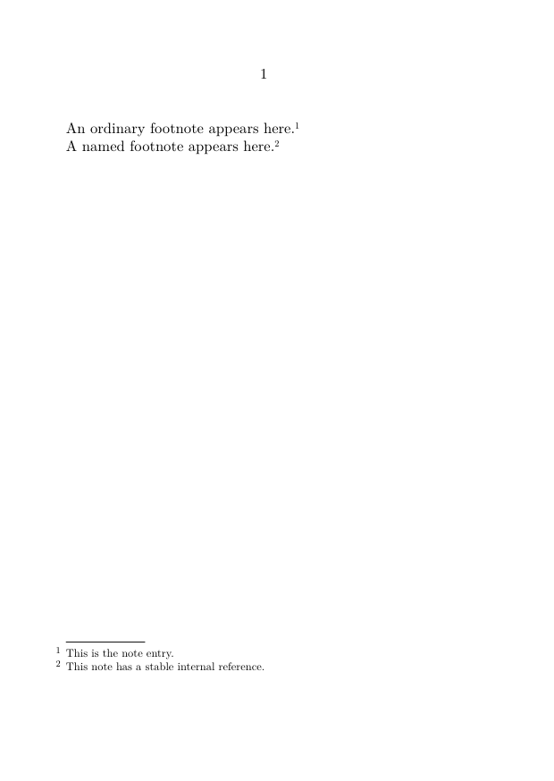
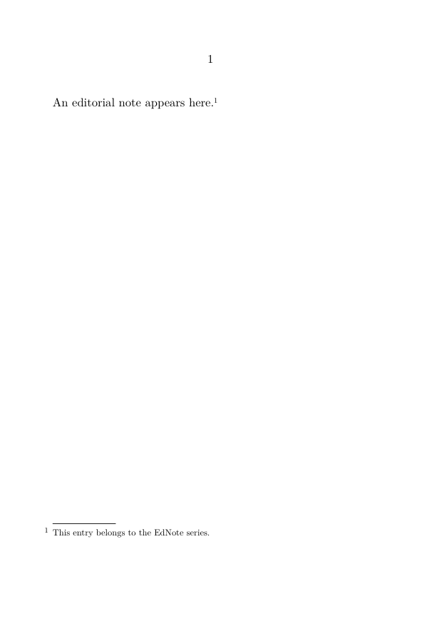
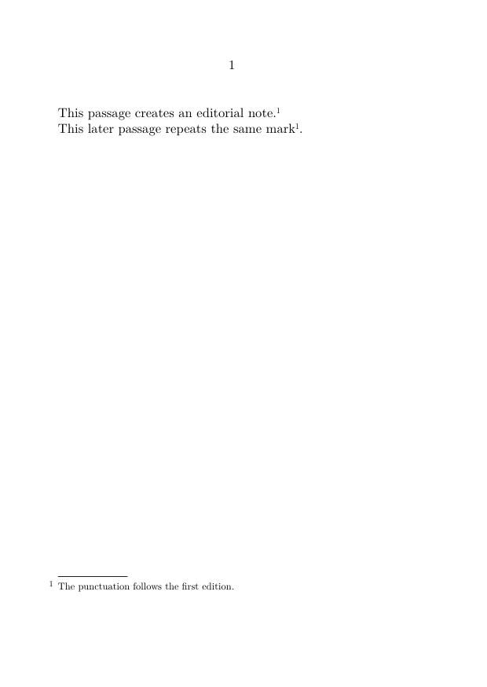
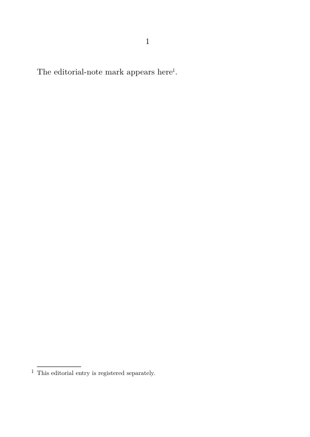
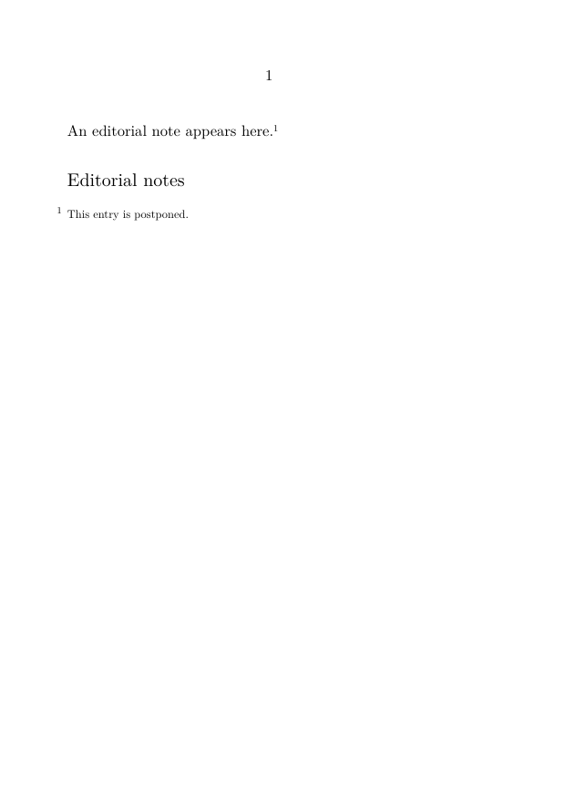
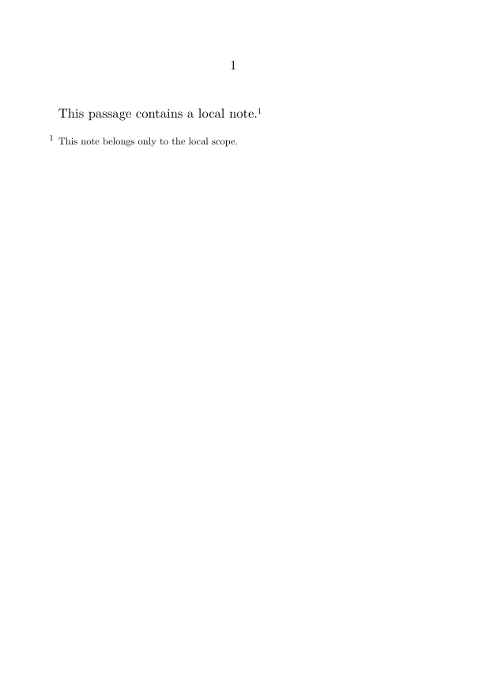
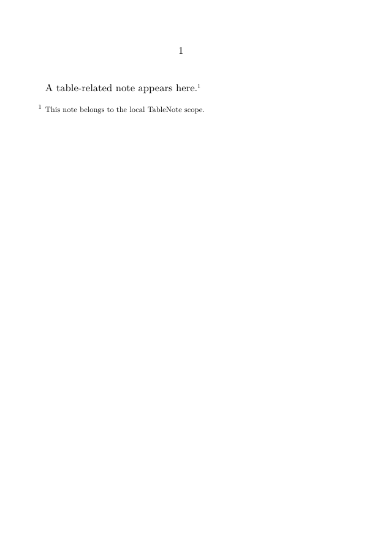
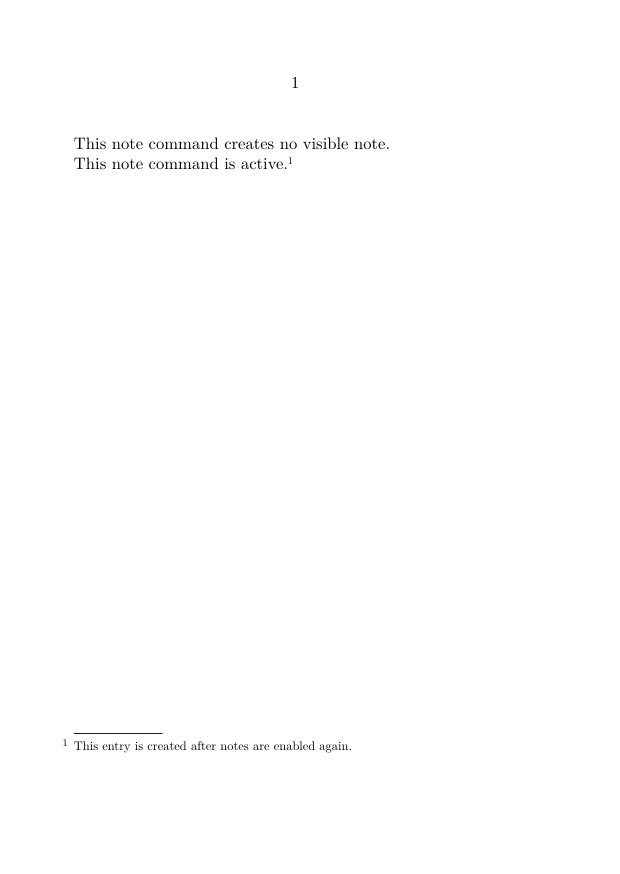

Footnotes in ConTeXt · Overview · Tutorial · How-to guides · Reference · Explanation · Glossary
🚧 Documentation under construction — This page and its subpages are currently being revised. Contributions are welcome: feel free to edit and improve them.
Contents
- 1 1. Scope
- 2 2. Command overview
- 3 3. Creating and identifying notes
- 4 4. Configuring note series and notation
- 5 5. Placement and local scope
- 6 6. Selection and interaction
- 7 7. Specialized layouts and content
- 8 8. Reference naming conventions
- 9 9. Diagnostic checklist
- 10 10. Related how-to guides
- 11 11. See also
1. Scope
This page summarizes the principal commands and configuration patterns used to:
- create ordinary footnotes;
- define custom note series;
- assign and reuse stable note references;
- separate a note mark from its text;
- configure numbering and presentation;
- postpone and place note entries;
- create local note scopes;
- enable or disable notes;
- configure interactive links;
- diagnose common note-related problems.
This is a lookup page. For guided instruction, use the Tutorial. For task-oriented procedures, use the How-to guides.
Reference-page conventions
In the syntax summaries below, words such as series, reference, and text are placeholders.
Optional arguments appear in square brackets. Lists of keys and values are representative rather than exhaustive. Complete behaviour may depend on the selected note series, notation alternative, document structure, and ConTeXt version.
2. Command overview
| Command | Main function | Detailed section |
|---|---|---|
\footnote
|
Creates an ordinary footnote mark and entry. | Section 3.1 |
\definenote
|
Defines a custom note series. | Section 3.2 |
\note
|
Prints the mark of a referenced note. | Section 3.3 |
\setnotetext
|
Registers a note entry separately from its mark. | Section 3.4 |
\setupnote
|
Configures properties and placement of a note series. | Section 4.1 |
\setupnotation
|
Configures numbering and typographical presentation. | Section 4.2 |
\placefootnotes
|
Places postponed entries from the ordinary footnote series. | Section 5.1 |
\placenotes
|
Places postponed entries from a named note series. | Section 5.1 |
\startlocalfootnotes
|
Starts a local scope for ordinary footnotes. | Section 5.2 |
\placelocalfootnotes
|
Places ordinary footnotes collected in a local scope. | Section 5.2 |
\startlocalnotes
|
Starts a local scope for a named note series. | Section 5.3 |
\placelocalnotes
|
Places a named note series collected locally. | Section 5.3 |
\notesenabledfalse
|
Disables note creation globally. | Section 6.1 |
\notesenabledtrue
|
Enables note creation globally. | Section 6.1 |
3. Creating and identifying notes
3.1. Create an ordinary footnote
3.1.1. Syntax
\footnote{note text}
With a stable internal reference:
\footnote[reference]{note text}
3.1.2. MWE
-
\setuppapersize[A6] \starttext An ordinary footnote appears here.\footnote {This is the note entry.} A named footnote appears here.\footnote[foot:source] {This note has a stable internal reference.} \stoptext
-

The command creates a note mark and entry and advances the counter of the predefined footnote series.
3.2. Define a custom note series
3.2.1. Syntax
\definenote [series] [base series]
The second argument identifies the series from which the new series inherits its initial configuration.
3.2.2. Example
\definenote [EdNote] [footnote]
This definition creates the following commands:
\EdNote{note text}
\EdNote[reference]{note text}
3.2.3. MWE
-
\setuppapersize[A6] \definenote [EdNote] [footnote] \starttext An editorial note appears here.\EdNote {This entry belongs to the EdNote series.} \stoptext
-

A custom note series can be configured independently after it has been defined.
3.3. Print a referenced note mark
For the ordinary footnote series:
\note[reference]
For a named note series:
\note[series][reference]
3.3.1. MWE
-
\setuppapersize[A6] \definenote [EdNote] [footnote] \starttext This passage creates an editorial note.\EdNote[ed:wording] {The punctuation follows the first edition.} This later passage repeats the same mark \note[EdNote][ed:wording]. \stoptext
-

The series name is required for custom note series
The abbreviated form \note[reference] refers to the predefined footnote series.
For a custom series, use \note[series][reference].
3.4. Register note text separately
3.4.1. Syntax
\setnotetext
[series]
[reference]
{note text}
3.4.2. MWE
-
\setuppapersize[A6] \definenote [EdNote] [footnote] \starttext The editorial-note mark appears here \note[EdNote][ed:manual]. \setnotetext [EdNote] [ed:manual] {This editorial entry is registered separately.} \stoptext
-

The mark and the separately registered entry must use exactly the same series name and reference.
For more detailed procedures, see:
4. Configuring note series and notation
4.1. Configure a series with
\setupnote
4.1.1. Syntax
\setupnote [series] [key=value, key=value]
4.1.2. Commonly used keys
The following keys are representative. Their precise effect may depend on the note series and layout.
| Key | Typical values | Function | Notes |
|---|---|---|---|
location
|
page, text, none
|
Controls automatic placement. | text requires explicit placement.
|
bodyfont
|
small, another body-font environment
|
Sets the body font used for note entries. | Depends on the available body-font environments. |
paragraph
|
yes, no
|
Requests paragraph-form composition of successive entries. | Often combined with a notation alternative. |
n
|
integer | Requests several note columns. | Best suited to numerous short entries. |
align
|
alignment specification | Controls note-text alignment. | May interact with notation alignment and text direction. |
setups
|
named setup | Applies a named setup while entries are composed. | Use when a reusable setup is required. |
next
|
command | Runs a command after a note has been created. | Advanced use. |
rule
|
series-dependent value | Controls the rule associated with the note block. | Behaviour may depend on the note layout. |
command
|
command | Applies a command during note composition. | Verify the exact target in the selected layout. |
4.1.3. Example
\setupnote [footnote] [location=text, bodyfont=small, paragraph=no]
4.2. Configure notation with
\setupnotation
4.2.1. Syntax
\setupnotation [series] [key=value, key=value]
4.2.2. Commonly used keys
The following keys concern numbering and the typographical presentation of note entries.
| Key | Typical values | Function | Notes |
|---|---|---|---|
numberconversion
|
numbers, characters, Characters, romannumerals, Romannumerals
|
Sets the printed form of the counter. | See Section 4.3. |
way
|
bypage, bysection, bychapter, bytext
|
Controls when the counter is reset. | Choose a value matching the document structure. |
alternative
|
named notation alternative | Selects the layout of the note entry. | Available alternatives depend on the notation mechanism. |
location
|
notation position | Places the number relative to the note entry. | Do not confuse this with note-series placement. |
width
|
dimension, broad
|
Reserves space for the note number. | Often combined with distance.
|
distance
|
dimension | Sets the distance between the number and note text. | Layout-dependent. |
hang
|
notation-dependent value | Controls hanging layout. | Verify with the selected alternative. |
align
|
alignment specification | Controls alignment of note entries. | Relevant to bidirectional documents. |
interaction
|
yes, no
|
Enables or disables note links for the series. | Global interaction must also be enabled. |
numbercommand
|
command | Applies a command to the converted note number. | Affects the displayed number. |
display
|
yes, no
|
Controls display-style behaviour. | Often used in compact layouts. |
4.2.3. Example
\setupnotation [footnote] [numberconversion=numbers, way=bychapter, width=broad, distance=.5em]
Do not confuse series placement with notation position
In \setupnote, location controls where note entries are placed.
In \setupnotation, location concerns the position of the note number relative to the entry.
4.3. Number conversions
4.3.1. Named conversions
| Value | Typical output |
|---|---|
numbers
|
1, 2, 3 |
characters
|
a, b, c |
Characters
|
A, B, C |
romannumerals
|
i, ii, iii |
Romannumerals
|
I, II, III |
4.3.2. Symbol sets
Some projects use predefined sets of traditional footnote symbols, for example:
\setupnotation [footnote] [numberconversion=set 2]
The available symbols and repetition behaviour should be checked in the compiled output, especially when several notes occur on the same page.
5. Placement and local scope
5.1. Postpone and place notes
For ordinary footnotes:
\setupnote [footnote] [location=text] \placefootnotes
For a custom note series:
\setupnote [EdNote] [location=text] \placenotes[EdNote]
5.1.1. MWE
-
\setuppapersize[A6] \definenote [EdNote] [footnote] \setupnote [EdNote] [location=text] \starttext An editorial note appears here.\EdNote {This entry is postponed.} \subject{Editorial notes} \placenotes[EdNote] \stoptext
-

The placement command must correspond to the series whose entries were postponed.
For a guided procedure, see:
5.2. Local ordinary footnotes
5.2.1. Syntax
\startlocalfootnotes content containing footnotes \placelocalfootnotes \stoplocalfootnotes
5.2.2. MWE
-
\setuppapersize[A6] \starttext \startlocalfootnotes This passage contains a local note.\footnote {This note belongs only to the local scope.} \placelocalfootnotes \stoplocalfootnotes \stoptext
-

The local scope keeps the collected entries associated with the enclosed object or passage.
5.3. Local custom note series
5.3.1. Syntax
\startlocalnotes[series] content containing notes from that series \placelocalnotes[series] \stoplocalnotes
5.3.2. MWE
-
\setuppapersize[A6] \definenote [TableNote] [footnote] \starttext \startlocalnotes[TableNote] A table-related note appears here.\TableNote {This note belongs to the local TableNote scope.} \placelocalnotes[TableNote] \stoplocalnotes \stoptext
-

For applications to tables, figures, captions, and framed material, see:
6. Selection and interaction
6.1. Enable and disable notes globally
6.1.1. Syntax
\notesenabledfalse \notesenabledtrue
6.1.2. MWE
-
\setuppapersize[A6] \starttext \notesenabledfalse This note command creates no visible note.\footnote {This entry is suppressed while notes are disabled.} \notesenabledtrue This note command is active.\footnote {This entry is created after notes are enabled again.} \stoptext
-

These switches are useful when producing annotated and unannotated versions from one source.
For a complete workflow, see:
6.2. Interactive notes
Global PDF interaction must first be enabled:
\setupinteraction [state=start]
Interaction can then be controlled for a note series:
\setupnotation [footnote] [interaction=yes]
or:
\setupnotation [footnote] [interaction=no]
The final behaviour also depends on the PDF viewer.
For a guided procedure, see:
7. Specialized layouts and content
7.1. Configuration pattern: paragraph-form notes
\setupnote [footnote] [paragraph=yes] \setupnotation [footnote] [alternative=serried, width=broad, distance=.5em, display=no]
This pattern is suitable for collections of short entries arranged in a compact block.
It does not by itself create a full critical apparatus. For scholarly apparatuses, see Building a critical apparatus with ConTeXt.
7.2. Configuration pattern: notes in columns
\setupnote [footnote] [n=2]
Several columns may be useful when a page contains many short note entries.
For detailed typographical choices, see:
7.3. Bidirectional note settings
Typical settings for a right-to-left context may include:
\setupdirections [bidi=global, method=unicode] \setupalign[r2l] \setupnotation [footnote] [align=r2l]
These settings are only part of a bidirectional workflow. The document must also use appropriate language settings, font coverage, and script features.
For a complete procedure, see:
7.4. Verbatim and typed material
For short inline material:
\type|\setupnote[footnote][bodyfont=small]|
For multiline material, prepare a buffer before the note:
\startbuffer[note-code] \setupnote [footnote] [bodyfont=small] \stopbuffer
Then refer to the prepared buffer:
\footnote
{The setup is:
\typebuffer[note-code]}
Do not start a block verbatim environment directly inside an ordinary footnote argument.
For additional examples and parsing constraints, see:
8. Reference naming conventions
Stable references should describe function or content:
foot:source foot:translation-choice ed:punctuation trad:terminology table:abbreviation
Avoid references based only on current printed numbers, since those numbers may change.
These prefixes are user-defined conventions. ConTeXt does not assign a special meaning to foot:, ed:, trad:, or table:.
9. Diagnostic checklist
9.1. Series and references
Check:
- whether the correct note series is being used;
- whether the series name has the correct capitalization;
- whether the mark and entry use exactly the same reference;
-
whether a custom series name was supplied to
\noteor\setnotetext.
9.2. Placement and local scope
Check:
-
whether
location=textorlocation=nonerequires explicit placement; - whether the placement command corresponds to the correct series;
- whether a local note scope has been closed too early;
- whether local entries are placed before the end of the local scope.
9.3. Configuration
Check:
-
whether a setting belongs to
\setupnoteor\setupnotation; - whether the selected notation alternative supports the requested setting;
- whether note creation has been disabled;
- whether a setup intended for one series was applied to another.
9.4. Output and interaction
Check:
- whether the selected font contains the required characters;
- whether the document language and text direction are configured correctly;
- whether global PDF interaction is enabled;
- whether the PDF viewer supports the generated links.
Frequent source of errors
A command may be valid but applied to the wrong note series, the wrong reference, or the wrong configuration level.
10. Related how-to guides
10.1. Basic note operations
10.2. Placement, postponement, and local scope
- Place footnotes at the end of a section or chapter
- Use local notes in tables, floats, and boxes
- Place numbered notes in the margin
10.3. Editorial organization
10.4. Special technical cases
- Create interactive footnotes
- Include verbatim material in footnotes
- Typeset notes in bidirectional documents
11. See also
- Footnote tutorial
- Explanation of the note mechanism
- Glossary of note terminology
- Endnotes
- Placing numbered notes in the margin
Footnotes in ConTeXt · Overview · Tutorial · How-to guides · Reference · Explanation · Glossary